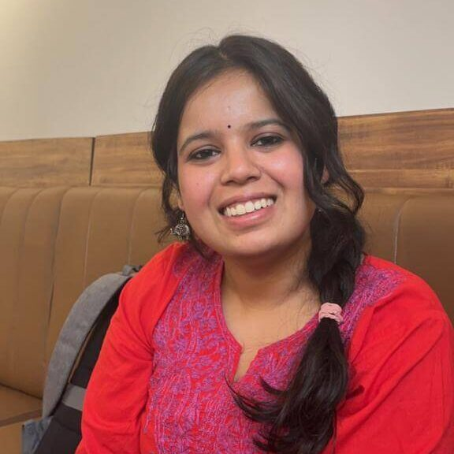
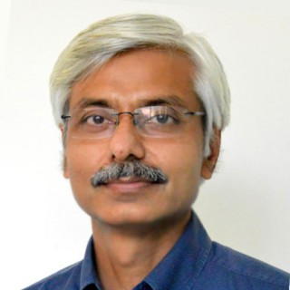
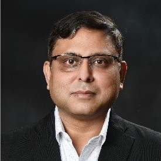
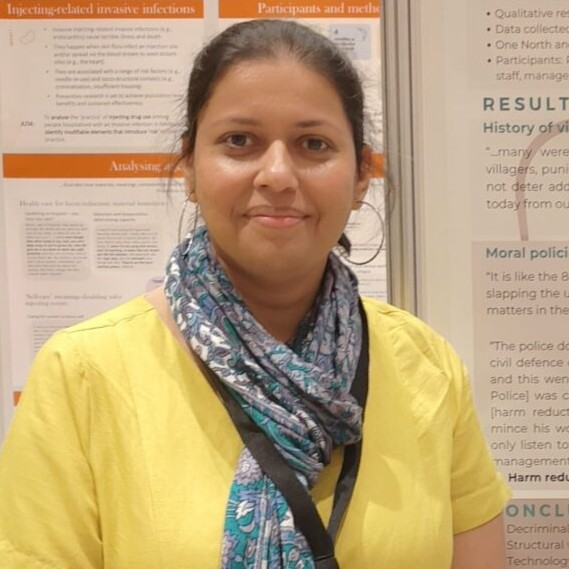
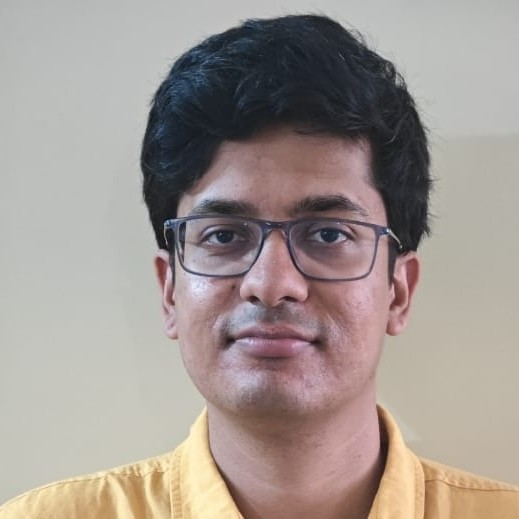
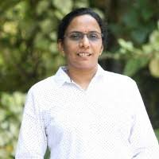

Meet Our Team

Anchal
Research Associate
Anchal is a Research Associate at the Microsoft AI Innovation and Inclusion Initiative (A4I) at the International Institute of Information Technology (IIIT) Bangalore. She has a Master’s degree in Information Technology from IIIT Bangalore and a Bachelor’s degree in Computer Science from the Indian Institute of Information Technology, Design and Manufacturing (IIITDM) Kancheepuram. Her research interests include Human-Computer Interaction (HCI), Accessibility, and ICT for Development (ICT4D).
Anchal has previously worked on projects related to accessibility in digital health, focusing on improving user experiences for people with disabilities. She is passionate about leveraging technology to create inclusive solutions that empower marginalized communities.
Anchal has previously worked on projects related to accessibility in digital health, focusing on improving user experiences for people with disabilities. She is passionate about leveraging technology to create inclusive solutions that empower marginalized communities.

Amit Prakash
Professor & Convener, CAGS, IIIT Bangalore
Amit Prakash is an Associate Professor at the International Institute of Information Technology (IIIT) Bangalore. He has been involved in setting up the Institute’s Centre for IT and Public Policy (CITAPP), Centre for Accessibility in the Global South (CAGS) and E-Health Research Centre (EHRC). His interests lie in Information Systems, Governance and Public Policy, particularly as they intersect in development sectors such as public health & nutrition, education & skill development, and food & livelihood security. The focus of his recent research and consulting efforts has been equity and inclusion in matters related to technology designs and policy choices.
Prior to joining academia, Amit worked for over 15 years on advisory assignments, at Deloitte, PricewaterhouseCoopers (PwC), and Centre for Development of Advanced Computing (C-DAC), involving IT in Governance policies and digital technology designs. He has a doctoral degree in Information Systems from the Indian Institute of Management (IIM) Bangalore and a bachelor’s degree in Civil Engineering from the Indian Institute of Technology (IIT) Roorkee.
Prior to joining academia, Amit worked for over 15 years on advisory assignments, at Deloitte, PricewaterhouseCoopers (PwC), and Centre for Development of Advanced Computing (C-DAC), involving IT in Governance policies and digital technology designs. He has a doctoral degree in Information Systems from the Indian Institute of Management (IIM) Bangalore and a bachelor’s degree in Civil Engineering from the Indian Institute of Technology (IIT) Roorkee.

Ashish Srivastava
Chief Impact Officer at A4I Lab
Ashish is the Chief Impact Officer at A4I (AI Innovation for Inclusion Initiative)—an IIITB and Microsoft Research collaboration. He has over 35 years of senior executive experience at companies like Wipro, Tata Steel, the IISc Innovation Hub, and SLK V-Labs (an AI company)—his career cuts across technologies such as AI, Digital, and Telecom.
He serves on the Digital Health Associates board and chairs the Scientific Review Board of Armman. Over the last few years, Ashish has pursued social and policy impact through technology. He designed and implemented population-scale AI and Digital solutions in public health, including Maternal & Child welfare. He also created boutique solutions for urban governance and defence. Ashish has been part of several government committees across health, early child education, and Smart City Data Strategy. At the invitation of UK High Commission, he joined an Indian delegation for discussing Indo-UK AI collaboration opportunities and was part of another cohort to study AI impact on healthcare in UK.
Ashish holds a Master’s from IIIT (Bengaluru), a B. Tech from IIT (BHU), and a PG certificate in Economics from the University of London.
He serves on the Digital Health Associates board and chairs the Scientific Review Board of Armman. Over the last few years, Ashish has pursued social and policy impact through technology. He designed and implemented population-scale AI and Digital solutions in public health, including Maternal & Child welfare. He also created boutique solutions for urban governance and defence. Ashish has been part of several government committees across health, early child education, and Smart City Data Strategy. At the invitation of UK High Commission, he joined an Indian delegation for discussing Indo-UK AI collaboration opportunities and was part of another cohort to study AI impact on healthcare in UK.
Ashish holds a Master’s from IIIT (Bengaluru), a B. Tech from IIT (BHU), and a PG certificate in Economics from the University of London.

Carolyn Kavita Tauro
Post-doctoral fellow at A4I Lab
Carolyn Kavita Tauro is a Post-doctoral fellow at the International Institute of Information Technology (IIIT) Bangalore. Her research interests include Information Systems, ICT for Development (ICT4D), Gender and Ethics in ICTs, and Value-sensitive designing. Carolyn’s doctoral thesis focused on dilemmas and capabilities in ICTs surrounding persons who use drugs seeking social harm reduction care in India.
Prior to joining academia, Carolyn worked as a Health Information Systems Medical Content Advisor with Médecins sans Frontières (MSF)/Doctors Without Borders UK. She has also worked in clinical and managerial capacities for projects offering care in Maternal and Child health, Infectious diseases (TB-HIV-HepC), Mental health and Sexual and Gender-based violence in humanitarian settings at MSF.
She has a doctoral degree in Information Systems from the University of Oslo (UiO), Norway, a Master’s degree in Public Health and Social Epidemiology from Tata Institute of Social Sciences (TISS), Mumbai, and an M.B.B.S. degree from Nepal.
Prior to joining academia, Carolyn worked as a Health Information Systems Medical Content Advisor with Médecins sans Frontières (MSF)/Doctors Without Borders UK. She has also worked in clinical and managerial capacities for projects offering care in Maternal and Child health, Infectious diseases (TB-HIV-HepC), Mental health and Sexual and Gender-based violence in humanitarian settings at MSF.
She has a doctoral degree in Information Systems from the University of Oslo (UiO), Norway, a Master’s degree in Public Health and Social Epidemiology from Tata Institute of Social Sciences (TISS), Mumbai, and an M.B.B.S. degree from Nepal.

Pradyumna Taduri
A4I Project Coordinator
Pradyumna is a manager and researcher at the Microsoft AI Innovation and Inclusion Initiative (A4I) centred at CAGS. Prior to this, he worked as a research associate on the Fairwork India project housed at the Centre for Information Technology and Public Policy (CITAPP) at IIITB. His interests include examining the role afforded to technology in ICTD interventions and technology-enabled labour control. As a member of CAGS, he aims to contribute to research in the accessibility space.

Shubha Krishnamurthy
Post-doctoral fellow at A4I Lab
Shubha is an Information Systems researcher with a deep passion for identifying and solving complex research problems. Prior to pursuing research, she has two decades of industry experience in product development & management roles covering Software Engineering, Product Management, and Digital Transformation.
Shubha has a PhD in Information Sciences from Indian Institute of Management, Bengaluru. Her dissertation was titled: "Navigating the Evolving Telemedicine Landscape: Adaptations and Diagnostic Outcomes." She also holds an MS in Software Systems and Engineering from BITS Pilani.
Shubha has a PhD in Information Sciences from Indian Institute of Management, Bengaluru. Her dissertation was titled: "Navigating the Evolving Telemedicine Landscape: Adaptations and Diagnostic Outcomes." She also holds an MS in Software Systems and Engineering from BITS Pilani.